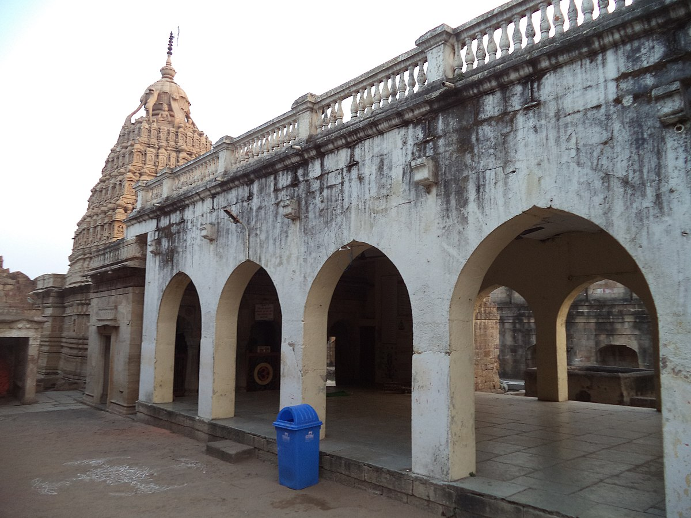

Chandrapur Fort
The Royal Legacy Chandrapur
Chandrapur fort is located in the heart of the Chandrapur district of Maharashtra state. Chandrapura fort is the oldest place in Chandrapur city, this fort is situated on the convergence of the Irai and Zarpat rivers and is one of the ancient places to be visited in Tadoba region.
History

After the death of Gond King Surja (Ser Shah), his son Khandkya Ballal Shah ascended the throne and built Chandrapur Fort in the 13th century. Located at the confluence of the Irai and Zarpat rivers, the fort is one of the oldest structures in Chandrapur and features eight historic gates.
The city also houses the tomb of King Vir Shah, built by Rani Hirai as a tribute to her husband. It is considered a rare example of a monument constructed by a wife in memory of her husband.
Archaeological discoveries, including Stone Age tools and evidence of pottery-making, indicate that the Chandrapur region was inhabited during the Neolithic period. Over the centuries, the area was ruled by several major dynasties, including the Mauryas, Shungas, Satavahanas, Vakatakas, Kalachuris, Rashtrakutas, Chalukyas, and Yadavas, contributing to its rich cultural and historical heritage.
Places to visit inside the fort

Chandrapur Fort showcases the unique architectural style of the ancient Gond civilization. Despite the effects of time, many of its structures remain recognizable and offer visitors a glimpse into the evolution of Indian architecture and the region's rich heritage.
Within the fort are several important attractions, including a well-maintained Shiva Temple, the historic Anchaleshwar Temple, and a lake that is believed, according to local legends, to possess healing properties. The lake area also features panels depicting scenes from the Mahabharata and Ramayana.
The fort is particularly known for its distinctive clockwise entry and exit design. Its strong gateways, intricate carvings, and artistic details reflect the craftsmanship of earlier centuries, making it a fascinating destination for history enthusiasts and tourists alike.